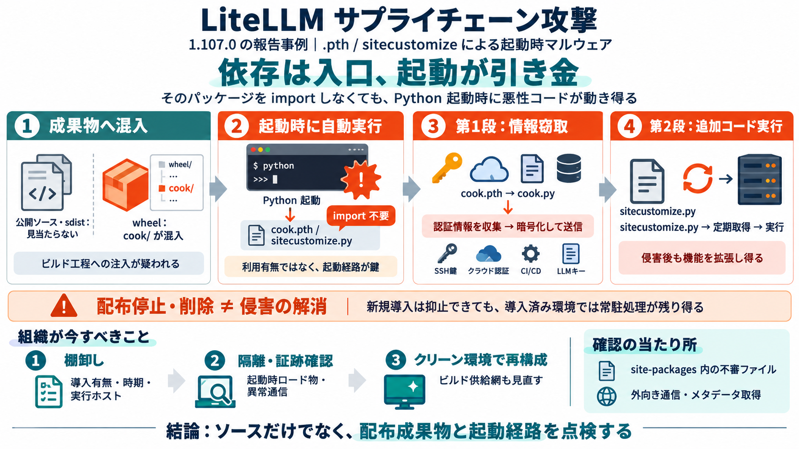

Contained: Oct 21, 2026 LiteLLM release v1.107.0 Compromised | liteLLM
These versions include a credential stealer and infrastructure for attackers to execute remote code on impacted machines…

These versions include a credential stealer and infrastructure for attackers to execute remote code on impacted machines…
1. `cook.pth` imports `cook.py`, a credential stealer. It collects SSH keys, cloud credentials, CI/CD secrets, AI tool t…
A bug in the malicious payload, a fork bomb that spawned runaway processes, is what triggered the analysis. Without it, …
GMO Flatt Security Research Official site Penetration Test Takumi(AI Agent) X (Twitter) October 21, 2026 # Softw…
On non-Kubernetes hosts, the same persistence mechanism is installed locally at `~/.config/sysmon/sysmon.py`. ### The K…